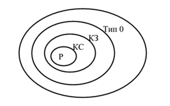

Определение 1.1. Алфавитом V называется конечное множество символов.
Определение 1.2. Цепочкой α в алфавите V называется любая конечная
последовательность символов этого алфавита.
Определение 1.3. Цепочка, которая не содержит ни одного символа,
называется пустой цепочкой и обозначается ε.
Определение 1.4. Формальное определение цепочки символов в алфавите
V:
1. ε - цепочка в алфавите V;
2. если α - цепочка в алфавите V и а – символ этого алфавита, то αа – цепочка в алфавите V;
3. β - цепочка в алфавите V тогда и только тогда, когда она является таковой в силу утверждений 1) и 2).
Определение 1.5. Длиной цепочки α называется число составляющих ее
символов (обозначается |α|).
Обозначим через V
* множество, содержащее все цепочки в алфавите V,
включая пустую цепочку ε, а через V
+ - множество, содержащее все цепочки
в алфавите V, исключая пустую цепочку ε.
Пример 1.1. Пусть V = {1, 0}, тогда V
* = {ε, 0,1, 00, 01,10,11, 000, K}, а
V
+ = {0, 1, 00, 01,10,11, 000, K}.
Определение 1.6. Формальной грамматикой называется четверка вида:
G = (V
T, V
N, P, S), (1.1)
где V
N - конечное множество нетерминальных символов грамматики
(обычно прописные латинские буквы);
V
T - множество терминальных символов грамматики (обычно строчные
латинские буквы, цифры, и т.п.), V
T ∩ V
N = ∅;
Р – множество правил вывода грамматики, являющееся конечным
подмножеством множества (V
T ∪ V
N) × (V
T ∪ V
N);
элемент (α, β) множества Р называется правилом вывода и записывается в
виде α → β (читается: «из цепочки α выводится цепочка β»);
S - начальный символ грамматики, S ∈ V
N.
Для записи правил вывода с одинаковыми левыми частями вида α → β
1,
α → β
2, K, α → β
n используется сокращенная форма записи
α → β
1 | β
2 |K| β
n.
Пример 1.2. Грамматика G1= ({0, 1}, {A, S}, P1, S), где множество Р1 состоит
из правил вида: 1) S → 0A1; 2) 0A → 00A1; 3) A → ε.
Определение 1.7. Цепочка β ∈ (V
T ∪ V
N)* непосредственно выводима из
цепочки α ∈ (V
T ∪ V
N)+ в грамматике G = (V
T, V
N, P, S) (обозначается:
α ⇒ β), если α = ξ
1γξ
2 и β = ξ
1δξ
2, где *
ξ
1, ξ
2, δ ∈ (V
T ∪ V
N), ∈ (∪)+ γ V
T V
N и правило
вывода γ → δ содержится во множестве Р.
Определение 1.8. Цепочка β ∈ (V
T ∪ V
N)* выводима из цепочки α ∈ (V
T ∪ V
N)+ в грамматике G = (V
T, V
N, P, S) (обозначается α ⇒ *β), если
существует последовательность цепочек γ
0, γ
1, K, γ
n (n ≥ 0) такая, что α = γ
0 ⇒ y
1 ⇒ K ⇒ γ
n = β.
Пример 1.3. В грамматике G
1 S ⇒ *000111, т.к. существует вывод
S ⇒ 0A1 ⇒ 00A11 ⇒ 000A111 ⇒ 000111.
Определение 1.9. Языком, порожденным грамматикой G = (V
T, V
N, P, S),
называется множество всех цепочек в алфавите V
N, которые выводимы из
начального символа грамматики S c помощью правил множества Р, т.е.
множество L(G) = {α ∈ V
T* | S ⇒ *α}.
Пример 1.4. Для грамматики G1 L(G1) = {0
n1
n | n > 0}$.
Определение 1.10. Цепочка α ∈ (V
T ∪ V
N) *, для которой существует вывод
S ⇒ *α, называется сентенциальной формой в грамматике G = (V
T, V
N, P, S).
Определение 1.11. Грамматики G1 и G2 называются эквивалентными, если
L(G1) = L(G2).
Пример 1.5. Для грамматики G1 эквивалентной будет грамматика
G2 = ({0, 1}, {S}, P2, S), где множество правил вывода P2 содержит правила
вида S → 0S1 | 01.
Классификация грамматик по Хомскому
Тип 0. Грамматика G = (V
T, V
N, P, S) называется грамматикой типа 0, если на
ее правила вывода не наложено никаких ограничений, кроме тех, которые
указаны в определении грамматики.
Тип 1. Грамматика G = (V
T, V
N, P, S) называется контекстно-зависимой
грамматикой (КЗ-грамматикой), если каждое правило вывода из множества Р
имеет вид α → β, где α ∈ (V
T ∪ V
N) +, β ∈ (V
T ∪ V
N) * и |α| ≤ |β|.
Тип 2. Грамматика G = (V
T, V
N, P, S) называется контекстно-свободной
грамматикой (КС-грамматикой), если ее правила вывода имеют вид: A → β,
где A ∈ V
N и β ∈ V
*.
Тип 3. Грамматика G = (V
T, V
N, P, S) называется регулярной грамматикой (Р -
грамматикой) выровненной вправо, если ее правила вывода имеют вид
A → aB | a, где a ∈ V
T ; A, B ∈ V
N.
Грамматика G = (V
T, V
N, P, S) называется регулярной грамматикой (Р -
грамматикой) выровненной влево, если ее правила вывода имеют вид
A → Ba | a, где a ∈ V
T ; A, B ∈ V
N.
Определение 1.12. Язык L(G) называется языком типа k, если его можно
описать грамматикой типа k, где k – максимально возможный номер типа
грамматики.
Соотношение типов грамматик и языков представлено на рисунке 1.1.

Рисунок 1.1 – Соотношение типов формальных языков и грамматик
Р – регулярная грамматика;
КС – контекстно-свободная грамматика;
КЗ – контекстно-зависимая грамматика;
Тип 0 – грамматика типа 0.
Пример 1.6. Примеры различных типов формальных языков и грамматик по
классификации Хомского. Терминалы будем обозначать строчными cимволами, нетерминалы – прописными буквами, начальный символ
грамматики – S.
а) Язык типа 0 L(G) = {2 1| 1 2a bn − n ≥ 0} определяется грамматикой с правилами вывода:
1) S → aaCFD;
2) AD → D;
3) F → AFB | AB;
4) Cb → bC;
5) AB → bBA;
6) CB → C;
7) Ab → bA;
8) bCD → ε.
б) Контекстно-зависимый язык L(G)= {a
nb
nc
n | n ≥ 1} определяется грамматикой
с правилами вывода:
1) S → aSBC | abc ;
2) bC → bc;
3) CB → BC;
4) cC → cc;
5) BB → bb.
в) Контекстно-свободный язык L(G)= {(ab)
n(cb)
n | n > 0 } определяется
грамматикой с правилами вывода:
1) S → aQb | accb;
2) Q → cSc.
г) Регулярный язык L(G)= {ω⊥ | ω ∈ {a, b} +, где нет двух рядом стоящих, а}
определяется грамматикой с правилами вывода:
1) S → A⊥ | B⊥;
2) A → a | Ba;
3) B → b | Bb | Ab.